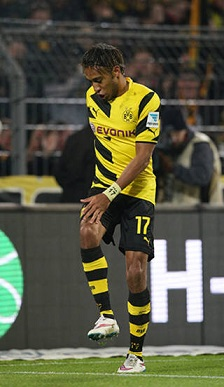

Футбольный клуб «Боруссия Дортмунд» был организован группой семинаристов в сентябре 1909 года в баре Zum Wildschütz. Прихожане были несогласны с позицией своего пастора, который не согласился включить футбол в программу спортивного кружка.
Тогда 18 парней во главе с Францем Якоби положили начало титулованному футбольному клубу. Имя «Боруссия» происходит от латинского названия Пруссии и соседней пивоварни.
Футбольный клуб «Боруссия Дортмунд» был организован группой семинаристов в сентябре 1909 года в баре Zum Wildschütz. Прихожане были несогласны с позицией своего пастора, который не согласился включить футбол в программу спортивного кружка.
Тогда 18 парней во главе с Францем Якоби положили начало титулованному футбольному клубу. Имя «Боруссия» происходит от латинского названия Пруссии и соседней пивоварни.
На первых порах команда достаточно долго играла в окружных лигах и лишь в 1936 году прошла в лигу Вестфалии.
В 1995 и 1996 году клуб добился чемпионства Германии, а в 1997 получил сразу два трофея: кубок Лиги чемпионов и Межконтинентальный кубок.
30 апреля 2011 года, одержав победу в домашнем матче над «Нюрнбергом» со счётом 2:0, за 2 тура до финиша «Боруссия» под руководством Юргена Клоппа стала чемпионом Германии сезона 2010/11.
В сезоне 2014/15 у команды случился страшнейший игровой кризис в чемпионате Германии — к началу февраля (после 19 игр чемпионата) команда занимала последнее место в Бундеслиге, при этом попала в плей-офф Лиги Чемпионов, где в 1/8 финала уступила туринскому «Ювентусу», проиграв оба матча: 1:2 на выезде и 0:3 дома. 16 апреля на пресс-конференции Юрген Клопп заявил, что покинет «Боруссию» Дортмунд по окончании сезона, а на его место придет Томас Тухель.
По итогам сезона «Боруссия» заняла в Чемпионате Германии 7 место и добралась до финала Кубка Германии, где уступила «Вольфсбургу» со счётом 1:3, ведя по ходу встречи. Тем самым Дортмунд попал в третий квалификационный раунд Лиги Европы УЕФА 2015/16. Лучшим игроком сезона 2014/15, по мнению болельщиков, признан габонец Пьер-Эмерик Обамеянг.
Среди известных футболистов «Боруссии» были: Торстен Фрингс, Йенс Леманн, Карл-Хайнц Ридле, Маттиас Заммер, Кристоф Метцельдер, Юрген Колер, Томаш Росицки, Эби Смолярек.
Самым принципиальным соперником «Боруссии» является «Шальке-04». Одна из причин этого противостояния — географическая близость этих городов. Встречи данных клубов носят название «Рурское дерби».